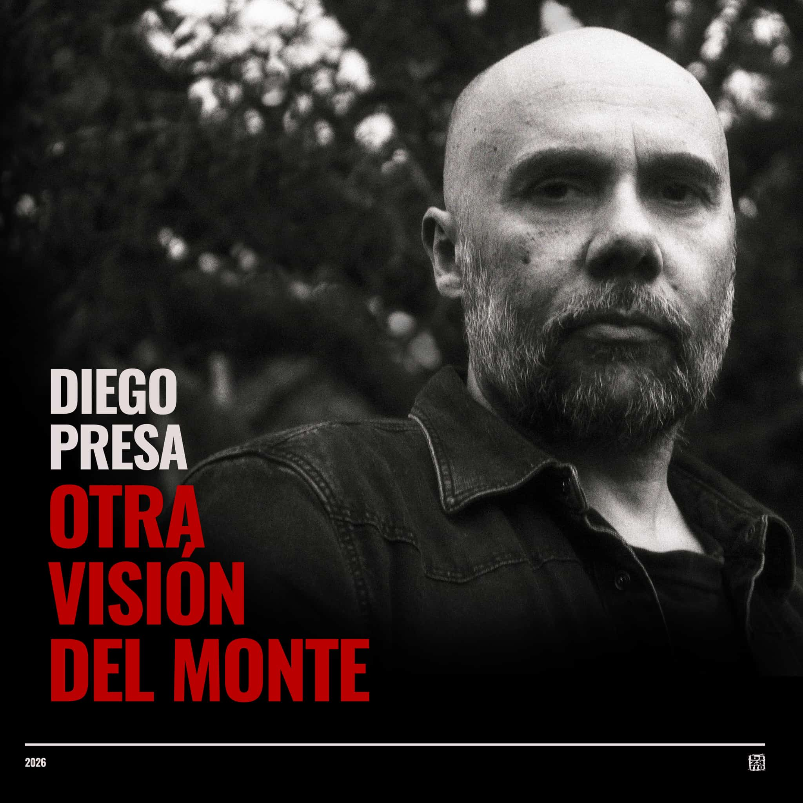

Otra visión del monte
Nuevo álbum de Diego Presa.
Más de una vez escuchamos esa frase a propósito de la madurez de un creador, para definir el momento en que un artista realiza un leve giro, donde no abandona lo que hacía hasta hace un rato, pero ahora todo encuentra su lugar de una manera exacta. Cada nota, cada palabra y cada frase cantada está tratada con el carácter y la frecuencia que le correspondía. Llega ese instante del hervor perfecto, de la maniobra en el aire sin equívocos, del gesto que no admite sospecha y nada podría ser mejor que eso que ahora permanece ahí flotando con peso propio e inalterable. Aquí está Diego Presa en su manifestación más completa, íntimo y colectivo, con un trabajo personal donde es enteramente uno y también lleva consigo otros que lo precedieron. Yo contengo multitudes, decía Walt Whitman, para referirse a que nunca somos solamente un ser único, sino muchos diferentes que se juntan, y también la suma de todos -o muchos- que vinieron antes. Por eso aquí, al escuchar a Diego canta también Zitarrosa, Darnauchans y hasta Jaime se mete en algún fraseo cuando menos se lo espera y aparece sin avisar. Los de atrás vienen conmigo, como decía el propio Alfredo, refiriendo a los que formaron nuestro perfil, cortados por tijeras parecidas y nutriéndonos de una sensibilidad en común que luego desarrolla su ramaje buscando una nueva luz. Es en la madurez cuando se necesitan menos recursos para decir más, pues posees la confianza para dejar de lado lo accesorio e ir directo a la esencia. Aquí el tratamiento musical es perfecto en su economía que agiganta y reverbera, donde las guitarras suenan muy nuestras, los arreglos de cuerdas justos y bienvenidos, cruzan todas las fronteras. Pero lo mejor es que todo eso sucede de una manera natural y a la vez invisible, sutil, diversa, que solamente suma y nunca resta. Eso es lo que ocurre cuando el manantial del que has bebido te quitó la sed, cumplió ya su función y no hay más necesidad de que aparezca. Lo que queda, lo que escuchas, lo que ves y sientes es el mejor Diego Presa. Un hombre con diez canciones que mueven de lugar el monte sin hacer fuerza, relajadamente, poniendo atención en cada árbol, cuida una por una todas las hojas del pasto, y hace un inventario de la variedad de pájaros que dibujan el cielo con sus alas de colores, intactos.
Diego Presa: Voz, guitarra criolla y guitarra folk
Nahuel Roht: Guitarra criolla y guitarrón
Federico Terranova: Violín y viola
Checo Anselmi: Contrabajo
Ahmed Isa Juan Ravioli: Guitarra criolla, buzuki, baglamás griego, ukelele, bajo, acordeón y arpa de boca
Todas las canciones escritas por Diego Presa, excepto EL FEDERAL Y LA CHALANA (Arakelian, Deniz, Presa) y SAN LUIS DE CANELONES (Enrique Presa)
Grabado en La cocina de Beti, Buenos Aires, Argentina, entre febrero y julio de 2026
Ahmed Isa Juan Ravioli: Grabación y edición
Checo Anselmi: Grabaciones adicionales
Diego Presa: Grabaciones de campo
Mauro Taranto: Mezcla y masterización
Sebastián Santana: Fotografía y diseño gráfico
Producción artística: Ahmed Isa Juan Ravioli
Producción ejecutiva: Bizarro Records
Edición en vinilo coproducida por Bizarro Records, Otras palabras producciones y Kristo Eleniak.